Egenmassage med boll och timer
Hitta triggerpunkten på kroppskartan, se var den strålar ut och massera själv med boll, foamroller eller hand – steg för steg och med timer.
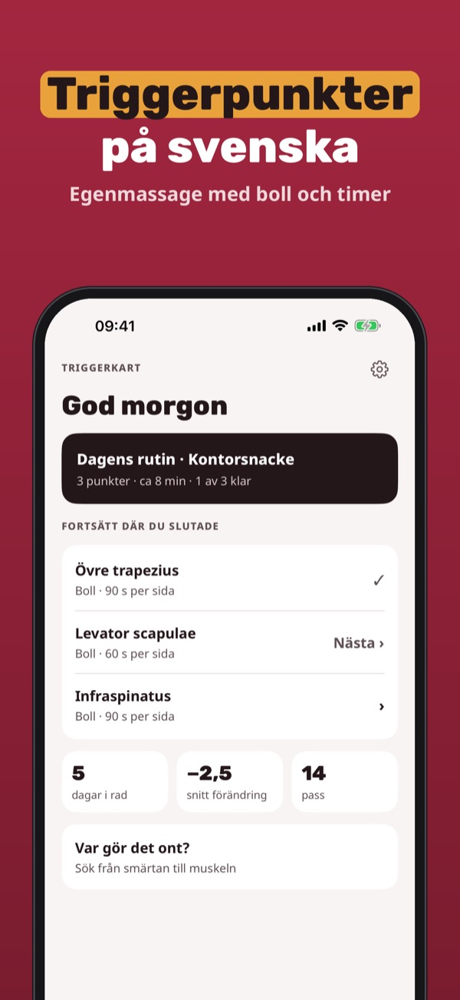
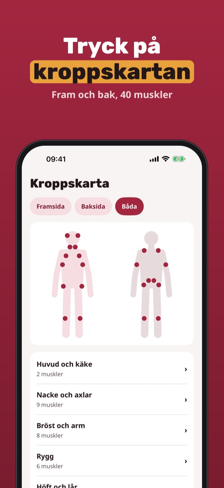
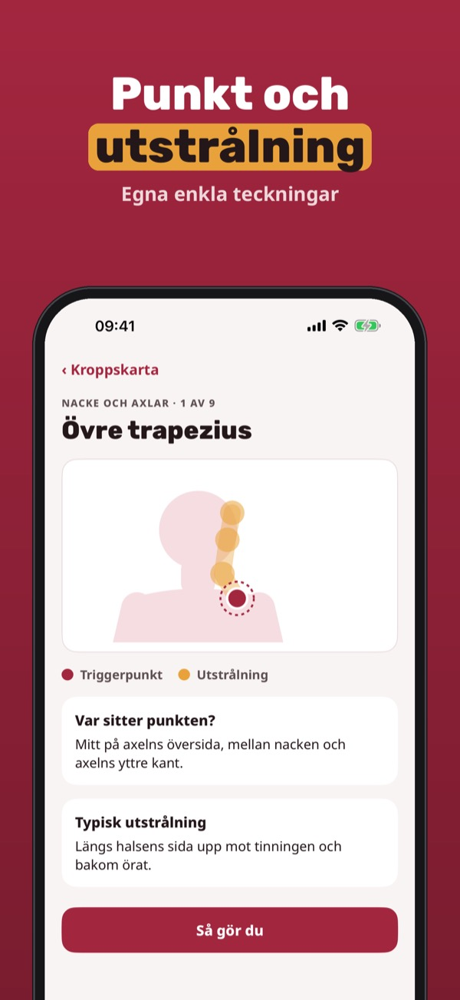
Triggerkart är en guide för egenmassage av triggerpunkter: hitta punkten, se utstrålningen och följ stegen med boll, foamroller eller hand.
Sex muskler med punkt, utstrålning och steg, timern och varningstecknen kan du använda utan köp. Plus är ett engångsköp och låser upp alla muskler, egna rutiner och loggen. Ingen prenumeration.
Triggerkart är en egenvårdsguide för massage. Appen ställer ingen diagnos, behandlar inga sjukdomar och ersätter inte vården. Vid bröstsmärta, domningar, skada eller feber: kontakta vården. Inte knuten till någon vårdgivare.
Terms of Use (EULA): https://www.apple.com/legal/internet-services/itunes/dev/stdeula/
Privacy: https://baytechbv.github.io/privacy/triggerkart-eu/
Selvmassasje med ball og timer
Finn triggerpunktet på kroppskartet, se hvor det stråler ut og masser selv med ball, foamroller eller hånd – steg for steg og med timer.
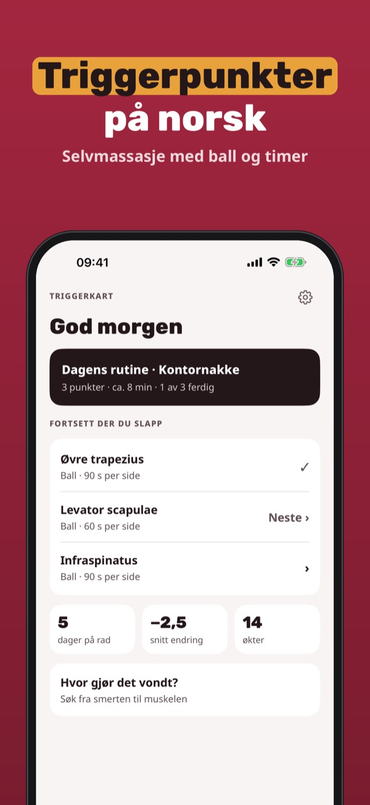
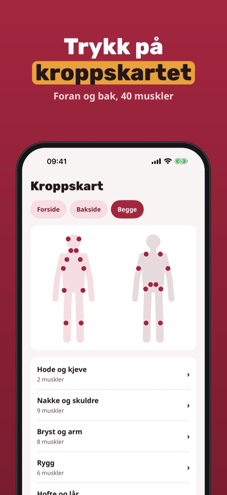
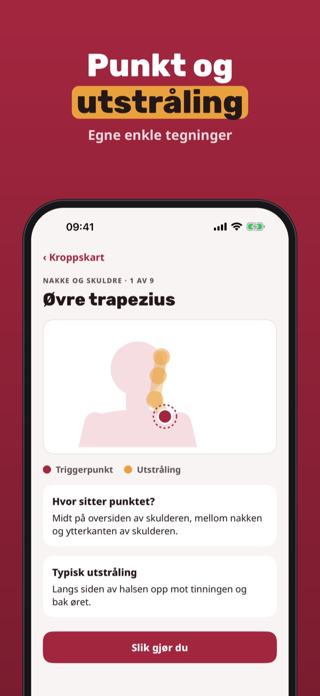
Triggerkart er en guide til selvmassasje av triggerpunkter: finn punktet, se utstrålingen og følg stegene med ball, foamroller eller hånd.
Seks muskler med punkt, utstråling og steg, timeren og faresignalene kan brukes uten kjøp. Plus er et engangskjøp som låser opp alle muskler, egne rutiner og loggen. Ingen abonnement.
Triggerkart er en egenomsorgsguide for massasje. Appen stiller ingen diagnose, behandler ingen sykdommer og erstatter ikke helsevesenet. Ved brystsmerter, nummenhet, skade eller feber: kontakt lege. Ikke tilknyttet noen helseaktør.
Terms of Use (EULA): https://www.apple.com/legal/internet-services/itunes/dev/stdeula/
Privacy: https://baytechbv.github.io/privacy/triggerkart-eu/
Selvmassage med bold og timer
Find triggerpunktet på kropskortet, se hvor det stråler ud, og massér selv med bold, foamroller eller hånd – trin for trin og med timer.
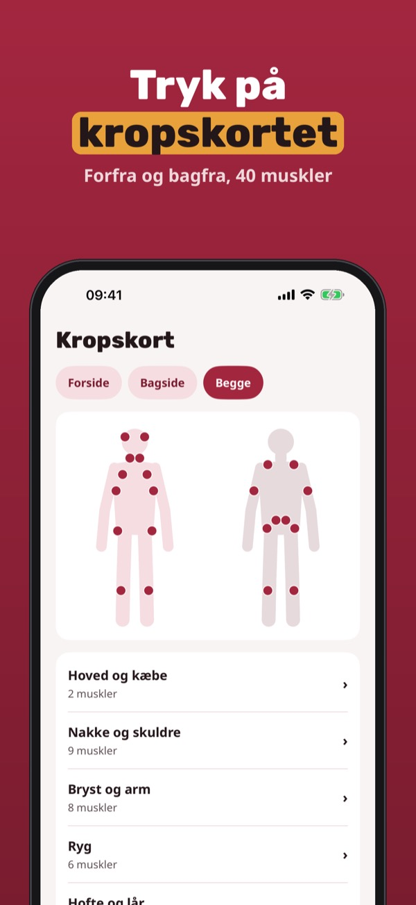
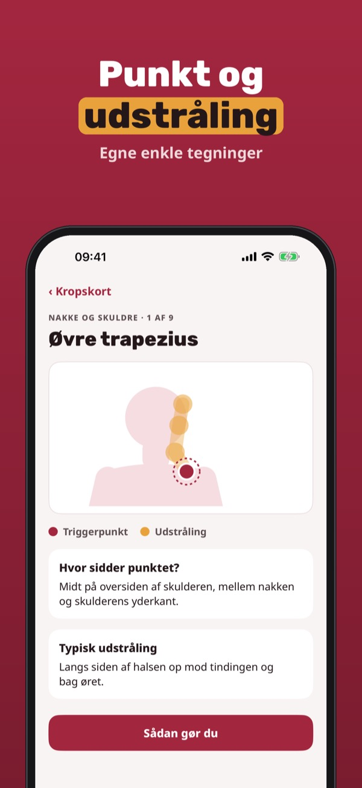
Triggerkart er en guide til selvmassage af triggerpunkter: find punktet, se udstrålingen og følg trinene med bold, foamroller eller hånd.
Seks muskler med punkt, udstråling og trin, timeren og faresignalerne kan bruges uden køb. Plus er et engangskøb, der låser alle muskler, egne rutiner og loggen op. Intet abonnement.
Triggerkart er en egenomsorgsguide til massage. Appen stiller ingen diagnose, behandler ingen sygdomme og erstatter ikke sundhedsvæsenet. Ved brystsmerter, følelsesløshed, skade eller feber: kontakt lægen. Ikke tilknyttet nogen sundhedsaktør.
Terms of Use (EULA): https://www.apple.com/legal/internet-services/itunes/dev/stdeula/
Privacy: https://baytechbv.github.io/privacy/triggerkart-eu/
Itsehieronta: pallo ja ajastin
Löydä triggerpiste kehokartalta, katso mihin kipu säteilee ja hiero itse pallolla, foam rollerilla tai kädellä – vaihe vaiheelta ja ajastimen kanssa.
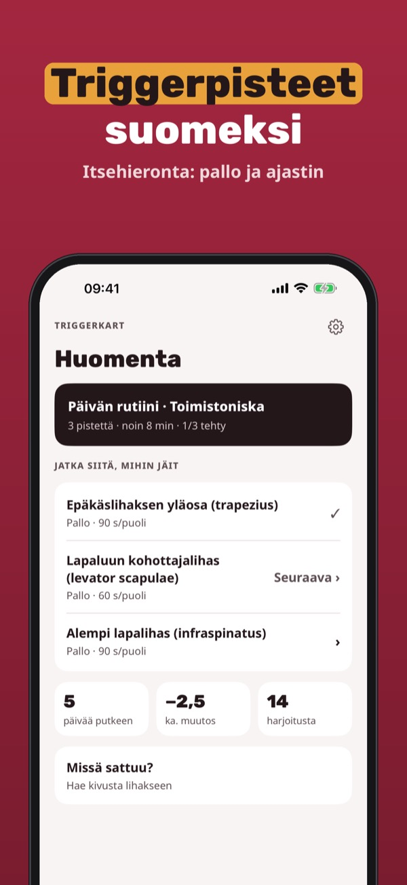
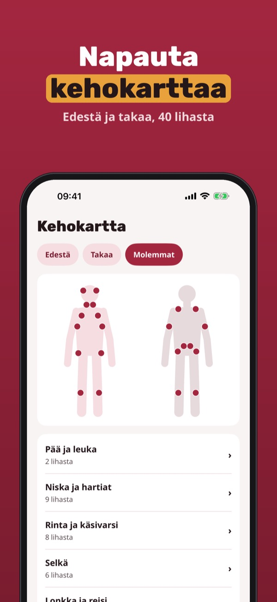
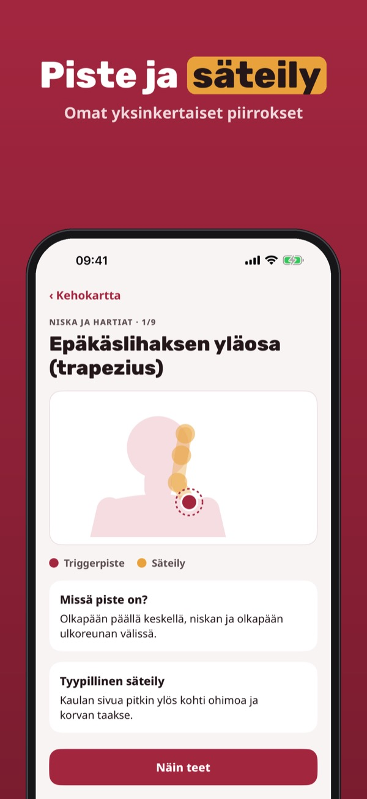
Triggerkart on opas triggerpisteiden itsehierontaan: löydä piste, näe säteily ja seuraa vaiheita pallolla, foam rollerilla tai kädellä.
Kuusi lihasta pisteineen, säteilyineen ja vaiheineen, ajastin ja varoitusmerkit ovat käytössä ilman ostoa. Plus on kertaosto, joka avaa kaikki lihakset, omat rutiinit ja päiväkirjan. Ei tilausta.
Triggerkart on itsehoidon hierontaopas. Sovellus ei tee diagnoosia, ei hoida sairauksia eikä korvaa terveydenhuoltoa. Rintakipu, puutuminen, vamma tai kuume: ota yhteys hoitoon. Ei yhteydessä mihinkään terveyspalveluun.
Terms of Use (EULA): https://www.apple.com/legal/internet-services/itunes/dev/stdeula/
Privacy: https://baytechbv.github.io/privacy/triggerkart-eu/
Zelfmassage met bal en timer
Vind het triggerpoint op de lichaamskaart, zie waar het uitstraalt en masseer zelf met bal, foamroller of hand – stap voor stap en met timer.
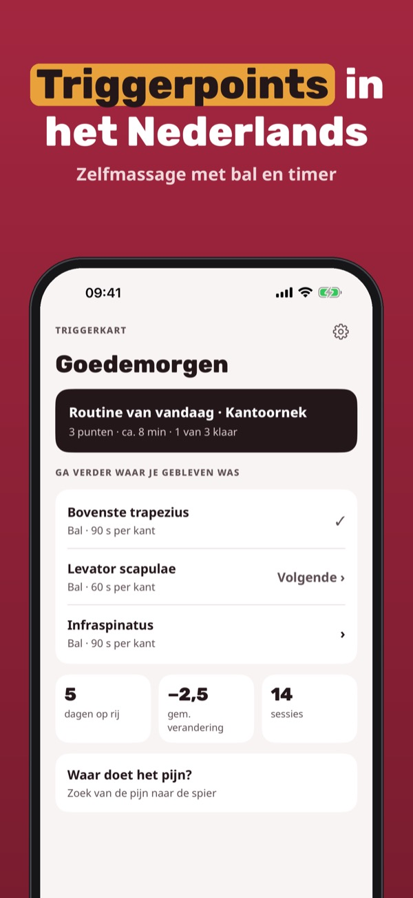
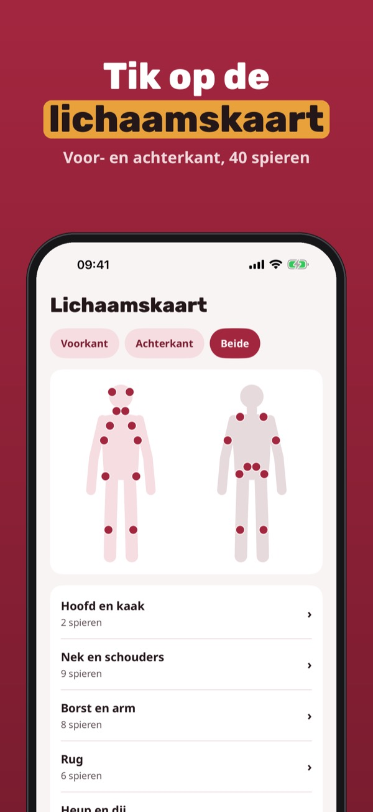
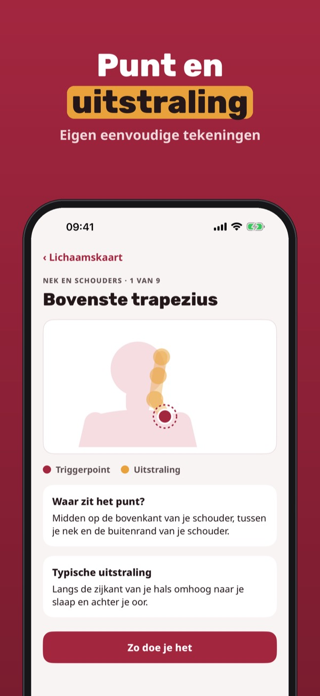
Triggerkart is een gids voor zelfmassage van triggerpoints: vind het punt, zie de uitstraling en volg de stappen met bal, foamroller of hand.
Zes spieren met punt, uitstraling en stappen, de timer en de waarschuwingssignalen gebruik je zonder aankoop. Plus is een eenmalige aankoop voor alle spieren, eigen routines en het logboek. Geen abonnement.
Triggerkart is een zelfzorggids voor massage. De app stelt geen diagnose, behandelt geen ziektes en vervangt geen zorg. Bij pijn op de borst, gevoelloosheid, letsel of koorts: bel de huisarts. Niet verbonden aan een zorgaanbieder.
Terms of Use (EULA): https://www.apple.com/legal/internet-services/itunes/dev/stdeula/
Privacy: https://baytechbv.github.io/privacy/triggerkart-eu/
Selbstmassage mit Ball & Timer
Finde den Triggerpunkt auf der Körperkarte, sieh, wohin er ausstrahlt, und massiere selbst mit Ball, Faszienrolle oder Hand – Schritt für Schritt mit Timer.
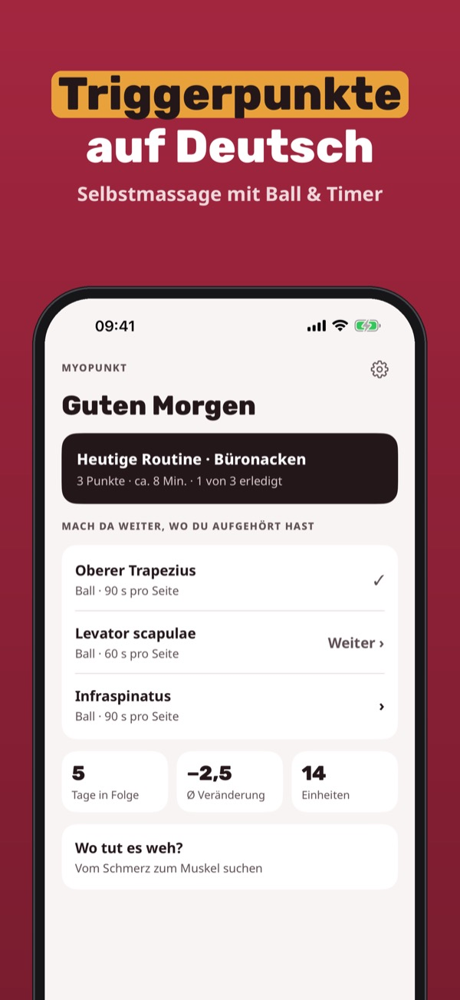
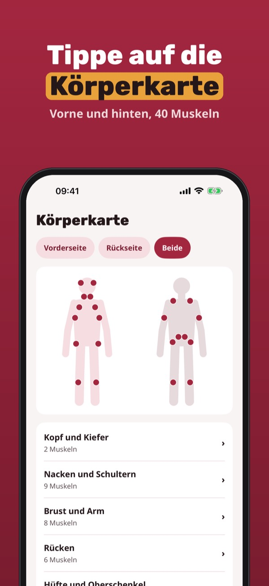
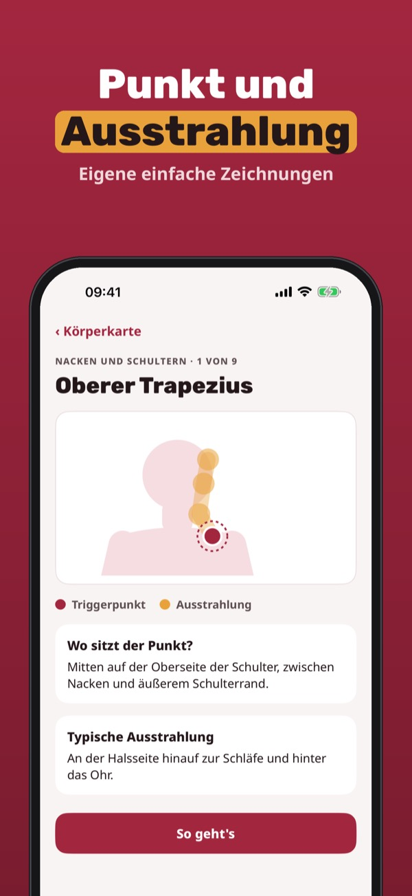
Myopunkt ist ein Leitfaden zur Selbstmassage von Triggerpunkten: Punkt finden, Ausstrahlung sehen und die Schritte mit Ball, Rolle oder Hand befolgen.
Sechs Muskeln mit Punkt, Ausstrahlung und Schritten, der Timer und die Warnzeichen sind ohne Kauf nutzbar. Plus ist ein Einmalkauf für alle Muskeln, eigene Routinen und das Tagebuch. Kein Abo.
Myopunkt ist ein Selbsthilfe-Leitfaden zur Massage. Die App stellt keine Diagnose, behandelt keine Krankheiten und ersetzt keine ärztliche Beratung. Bei Brustschmerz, Taubheit, Verletzung oder Fieber: Arzt kontaktieren. Mit keinem Anbieter verbunden.
Terms of Use (EULA): https://www.apple.com/legal/internet-services/itunes/dev/stdeula/
Privacy: https://baytechbv.github.io/privacy/triggerkart-eu/